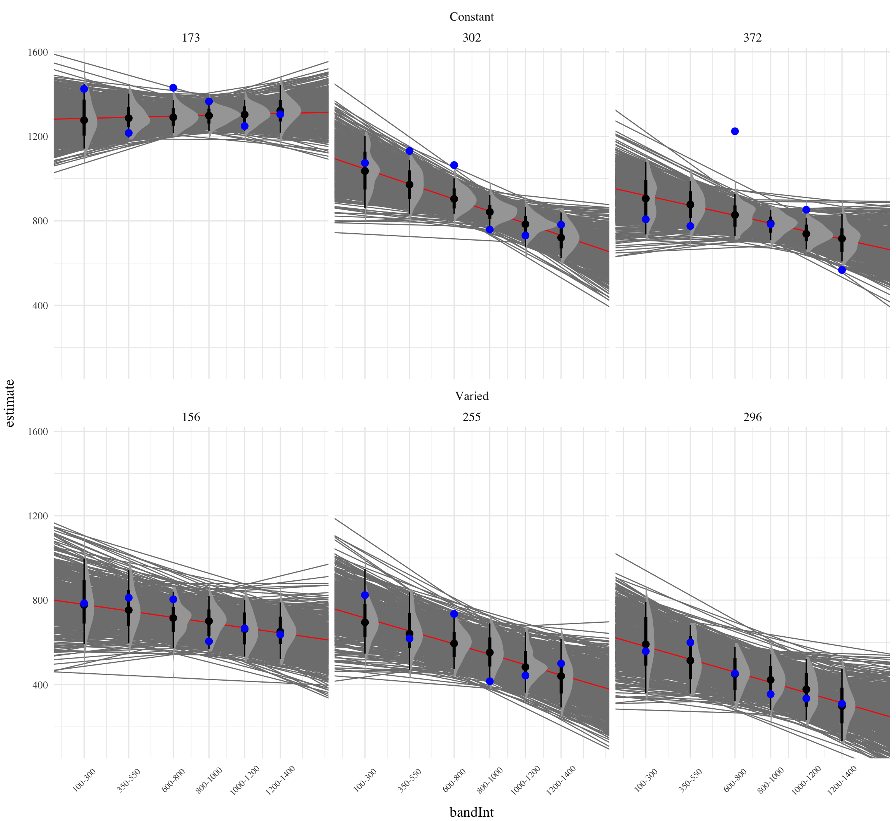

Figure 1 illustrates the design of Experiment 2. The stages of the experiment (i.e. training, testing no-feedback, test with feedback), are identical to that of Experiment 1. The only change is that Experiment 2 participants train, and then test, on bands in the reverse order of Experiment 1 (i.e. training on the softer bands; and testing on the harder bands).
Figure 1: Experiment 2 Design. Constant and Varied participants complete different training conditions. The training and testing bands are the reverse of Experiment 1.
Results
Testing Phase - No feedback.
In the first part of the testing phase, participants are tested from each of the velocity bands, and receive no feedback after each throw.
Deviation From Target Band
Descriptive summaries testing deviation data are provided in Table 1 and Figure 2. To model differences in accuracy between groups, we used Bayesian mixed effects regression models to the trial level data from the testing phase. The primary model predicted the absolute deviation from the target velocity band (dist) as a function of training condition (condit), target velocity band (band), and their interaction, with random intercepts and slopes for each participant (id).
Figure 2: E2. Deviations from target band during testing without feedback stage.
Table 2: Experiment 2. Bayesian Mixed Model predicting absolute deviation as a function of condition (Constant vs. Varied) and Velocity Band
Term
Estimate
95% CrI Lower
95% CrI Upper
pd
Intercept
151.71
90.51
215.86
1.00
conditVaried
-70.33
-156.87
16.66
0.94
Band
0.10
0.02
0.18
1.00
condit*Band
0.12
0.02
0.23
0.99
Contrasts
contrast
Band
value
lower
upper
pd
Constant - Varied
100
57.57
-20.48
135.32
0.93
Constant - Varied
350
26.60
-30.93
83.84
0.83
Constant - Varied
600
-4.30
-46.73
38.52
0.58
Constant - Varied
800
-29.30
-69.38
11.29
0.92
Constant - Varied
1000
-54.62
-101.06
-5.32
0.98
Constant - Varied
1200
-79.63
-139.47
-15.45
0.99
The model predicting absolute deviation showed a modest tendency for the varied training group to have lower deviation compared to the constant training group (β = -70.33, 95% CI [-156.87, 16.66]),with 94% of the posterior distribution being less than 0. This suggests a potential benefit of training with variation, though the evidence is not definitive.
(SHOULD PROBABLY DO ALTERNATE ANALYSIS THAT ONLY CONSIDERS THE NOVEL EXTRAPOLATION BANDS)
Figure 3: E2. Conditioinal Effect of Training Condition and Band. Ribbon indicated 95% Credible Intervals.
Discrimination between Velocity Bands
In addition to accuracy/deviation. We also assessed the ability of participants to reliably discriminate between the velocity bands (i.e. responding differently when prompted for band 600-800 than when prompted for band 150-350). Table 3 shows descriptive statistics of this measure, and Figure 1 visualizes the full distributions of throws for each combination of condition and velocity band. To quantify discrimination, we again fit Bayesian Mixed Models as above, but this time the dependent variable was the raw x velocity generated by participants.
When examining discrimination ability using the model predicting raw x-velocity, the results were less clear than those of the absolute deviation analysis. The slope on Velocity Band (β = 0.71, 95% CrI [0.58, 0.84]) indicates that participants showed good discrimination between bands overall. However, the interaction term suggested this effect was not modulated by training condition (β = -0.06, 95% CrI [-0.24, 0.13]) Thus, while varied training may provide some advantage for accuracy, both training conditions seem to have similar abilities to discriminate between velocity bands.
Figure 5: Conditional effect of training condition and Band. Ribbons indicate 95% HDI.
Table 5: Slope coefficients by quartile, per condition
Condition
Q_0%_mean
Q_25%_mean
Q_50%_mean
Q_75%_mean
Q_100%_mean
Constant
-0.2890915
0.3946927
0.6978270
1.0756615
1.615257
Varied
-0.2457200
0.3112108
0.6810634
0.9466606
1.810451
Figure 6 visually represents the distributions of estimated slopes relating velocity band to x velocity for each participant, ordered from lowest to highest within condition. Slope values are lower overall for varied training compared to constant training. Figure Xb plots the density of these slopes for each condition. The distribution for varied training has more mass at lower values than the constant training distribution. Both figures illustrate the model’s estimate that varied training resulted in less discrimination between velocity bands, evidenced by lower slopes on average.
(a) Slope estimates by participant - ordered from lowest to highest within each condition.
Figure 6: Slope distributions between condition
(a) subset with largest slopes

(b) subset with smallest slopes
Figure 7: Subset of Varied and Constant Participants with the smallest and largest estimated slope values. Red lines represent the best fitting line for each participant, gray lines are 200 random samples from the posterior distribution. Colored points and intervals at each band represent the empirical median and 95% HDI.